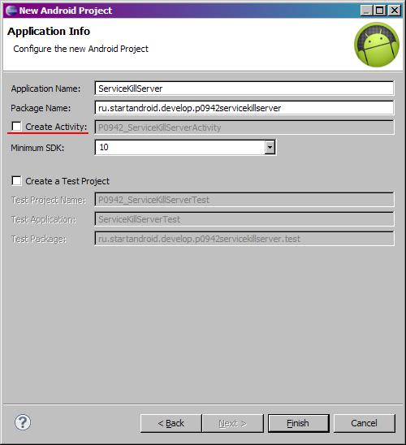
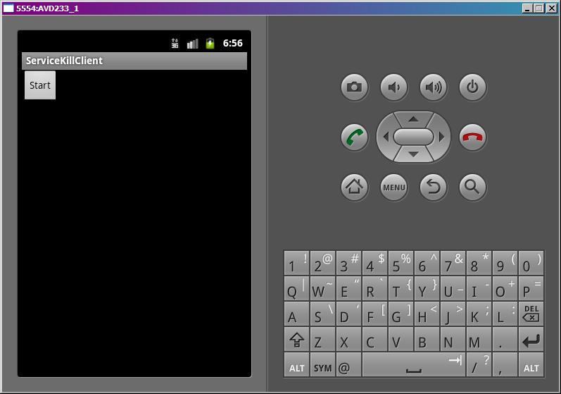
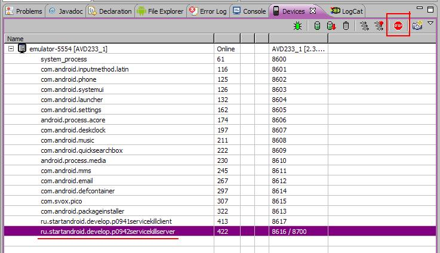

В этом уроке:
- рассмотрим подробнее метод onStartCommand
Метод onStartCommand должен возвращать int. В прошлых примерах мы использовали ответ метода супер-класса. В этом уроке разберемся, что мы можем возвращать, и чем нам это грозит. Также посмотрим, что за флаги (второй параметр) идут на вход этому методу.
Система может убить сервис, если ей будет не хватать памяти. Но в наших силах сделать так, чтобы наш сервис ожил, когда проблема с памятью будет устранена. И более того, не просто ожил, а еще и снова начал выполнять незавершенные вызовы startService.
Т.е. мы вызываем startService, срабатывает onStartCommand и возвращает одну из следующих констант:
START_NOT_STICKY – сервис не будет перезапущен после того, как был убит системой
START_STICKY – сервис будет перезапущен после того, как был убит системой
START_REDELIVER_INTENT – сервис будет перезапущен после того, как был убит системой. Кроме этого, сервис снова получит все вызовы startService, которые не были завершены методом stopSelf(startId).
А второй параметр flags метода onStartCommand дает нам понять, что это повторная попытка вызова onStartCommand.
В документацие написано, что flags может принимать значения 0, START_FLAG_RETRY или START_FLAG_REDELIVERY.
На практике я ни разу не встречал значения 0. Постоянно приходит START_FLAG_RETRY. По этому поводу я видел в инете мнение, что это реальный баг системы.
А вот на флаг START_FLAG_REDELIVERY можно положиться. Если он пришел вам в методе onStartCommand, значит, прошлый вызов этого метода вернул START_REDELIVER_INTENT, но не был завершен успешно методом stopSelf(startId).
В общем, на словах трудно все это объяснять, сейчас нарисуем приложение, и все станет понятнее.
Будем создавать два проекта - соответственно, два Application-а у нас получится. В первом будет только одно Activity, которое будет вызывать сервис. А во втором собственно и будет этот сервис. Т.е. в прошлых уроках у нас приложение и сервис были в одном Application, а в этом уроке мы их раскидаем по двум разным Application. И сейчас даже объясню, зачем мы так сделаем.
В начале урока я написал «Система может убить сервис». Этим мы и будем сейчас заниматься, чтобы на практике проверить поведение сервиса в таких случаях. Мы будем убивать процесс, который отвечает за сервис. Если бы у нас сервис и приложение были бы в одном Application, то они выполнялись бы в одном процессе. И убив процесс, мы грохнули бы и сервис и приложение. А нам надо убить только сервис, поэтому выносим его в отдельное Application, и он в своем процессе будет работать.
Я раскидал сервис и приложение по разным проектам для большей наглядности. А вообще, организовать работу сервиса и приложения в разных процессах можно было и в одном проекте (в одном Application). Для этого в манифесте для сервиса надо прописать атрибут: android:process=":newproc". Вместо newproc можно использовать свое слово.
Итак, создадим первый проект:
Project name: P0941_ServiceKillClient
Build Target: Android 4.0
Application name: ServiceKillClient
Package name: ru.startandroid.develop.p0941servicekillclient
Create Activity: MainActivity
Это у нас будет приложение-клиент, оно будет вызывать сервис.
Добавим в strings.xml строки:
<string name="start">Start</string>Экран main.xml:
<?xml version="1.0" encoding="utf-8"?>
<LinearLayout
xmlns:android="http://schemas.android.com/apk/res/android"
android:layout_width="fill_parent"
android:layout_height="fill_parent"
android:orientation="vertical">
<Button
android:id="@+id/btnStart"
android:layout_width="wrap_content"
android:layout_height="wrap_content"
android:onClick="onClickStart"
android:text="@string/start">
</Button>
</LinearLayout>MainActivity.java:
package ru.startandroid.develop.p0941servicekillclient;
import android.app.Activity;
import android.content.Intent;
import android.os.Bundle;
import android.view.View;
public class MainActivity extends Activity {
/** Called when the activity is first created. */
@Override
public void onCreate(Bundle savedInstanceState) {
super.onCreate(savedInstanceState);
setContentView(R.layout.main);
}
public void onClickStart(View v) {
startService(new Intent("ru.startandroid.develop.p0942servicekillserver.MyService").putExtra("name", "value"));
}
}Просто вызов сервиса. Вспоминаем способы вызова Activity, которые мы знаем, и понимаем, что здесь идет аналогичный вызов сервиса через Action. А значит, когда будем создавать сервис, надо будет настроить Intent Filter с этим Action. На прошлых уроках мы сервис вызывали через класс, т.к. там приложение и сервис в одном Application у нас были.
В Intent помещаем параметр с именем name и значением value. Это нам понадобится, чтобы убедиться, что система при восстановлении сервиса и повторном вызове не потеряет наши данные.
Создадим второй проект, без Activity:
Project name: P0942_ServiceKillServer
Build Target: Android 4.0
Application name: ServiceKillServer
Package name: ru.startandroid.develop.p0942servicekillserver
Уберите эту галку

Нам в этом Application не понадобится Activity.
В втором проекте создаем сервис, класс MyService.java:
package ru.startandroid.develop.p0942servicekillserver;
import java.util.concurrent.TimeUnit;
import android.app.Service;
import android.content.Intent;
import android.os.IBinder;
import android.util.Log;
public class MyService extends Service {
final String LOG_TAG = "myLogs";
public void onCreate() {
super.onCreate();
Log.d(LOG_TAG, "MyService onCreate");
}
public void onDestroy() {
super.onDestroy();
Log.d(LOG_TAG, "MyService onDestroy");
}
public int onStartCommand(Intent intent, int flags, int startId) {
Log.d(LOG_TAG, "MyService onStartCommand");
readFlags(flags);
MyRun mr = new MyRun(startId);
new Thread(mr).start();
return START_NOT_STICKY;
}
public IBinder onBind(Intent arg0) {
return null;
}
void readFlags(int flags) {
if ((flags&START_FLAG_REDELIVERY) == START_FLAG_REDELIVERY)
Log.d(LOG_TAG, "START_FLAG_REDELIVERY");
if ((flags&START_FLAG_RETRY) == START_FLAG_RETRY)
Log.d(LOG_TAG, "START_FLAG_RETRY");
}
class MyRun implements Runnable {
int startId;
public MyRun(int startId) {
this.startId = startId;
Log.d(LOG_TAG, "MyRun#" + startId + " create");
}
public void run() {
Log.d(LOG_TAG, "MyRun#" + startId + " start");
try {
TimeUnit.SECONDS.sleep(15);
} catch (InterruptedException e) {
e.printStackTrace();
}
stop();
}
void stop() {
Log.d(LOG_TAG, "MyRun#" + startId + " end, stopSelfResult("
+ startId + ") = " + stopSelfResult(startId));
}
}
}Он похож на сервис с прошлого урока.
MyRun – Runnable класс, который эмулирует долгую работу. Ставим в нем паузу 15 секунд. После этого вызываем stopSelfResult.
В onStartCommand пишем в лог значение из Intent, создаем экземпляр MyRun и отправляем его работать в новый поток. Также здесь вызываем метод readFlags и передаем ему flags. И возвращаем константу START_NOT_STICKY. Напомню, что START_NOT_STICKY означает, что сервис не будет перезапущен после того, как будет убит.
В методе readFlags определяем, какие флаги содержатся в readFlags, и отмечаем это в логе.
Прописываем сервис в манифесте и добавляем к нему IntentFilter c action = ru.startandroid.develop.p0942servicekillserver.MyService.
Все сохраняем. Для начала, запускаем второй проект (P0942_ServiceKillServer), он установится в эмулятор, но ничего не произойдет, т.к. Activity никаких не было, только сервис.
В консоли будут такие строки:
Installing P0942_ServiceKillServer.apk...
Success!
\P0942_ServiceKillServer\bin\P0942_ServiceKillServer.apk installed on device
Done!
Теперь запускаем первый проект. Приложение установится в эмулятор и запустится.

Нам надо получить доступ к процессам. Для этого можно открыть перспективу DDMS и там увидеть все процессы.
А можно и в нашу текущую перспективу добавить это окно.
В Eclipse меню Window > Show View > Other > Android > Devices.
Снизу должна появиться вкладка Devices. В ней показан наш эмулятор и запущенные процессы.
Мы видим, что запущено наше приложение. А когда мы нажмем в приложении кнопку Start, запустится сервис и в списке процессов появится еще один процесс. Вот его нам и надо будет остановить.
У нас будет 15 секунд, чтобы удалить его. Потому что через 15 секунд он успешно вызовет stopSelfResult и сам закроется.
Итак, жмем Start. Появился процесс

Выделяем его и жмем кнопку Stop Process. Процесс исчез. Смотрим логи:
MyService onCreate
MyService onStartCommand, name = value
START_FLAG_RETRY
MyRun#1 create
MyRun#1 start
Сервис создался и начал выполнять вызов startService. При этом почему-то мы получили флаг START_FLAG_RETRY. Хотя это у нас первая попытка вызова сервиса. Это я, к сожалению, никак не могу прокомментировать.
Далее видим, как создался и начал работу MyRun#1. А потом мы убили процесс, и все закончилось на этом. Метод onStartCommand вернул START_NOT_STICKY и поэтому не был восстановлен после убийства.
Давайте проверим следующую константу. Перепишем onStartCommand:
public int onStartCommand(Intent intent, int flags, int startId) {
Log.d(LOG_TAG, "MyService onStartCommand, name = " + intent.getStringExtra("name"));
readFlags(flags);
MyRun mr = new MyRun(startId);
new Thread(mr).start();
return START_STICKY;
}Теперь будем возвращать START_STICKY. Это значит, что сервис будет восстановлен после убийства.
Все сохраняем, запускаем (CTRL+F11). Наш сервис инсталлится на эмулятор. А приложение так и работает до сих пор.
Жмем Start и сразу же в процессах убиваем появившийся процесс сервиса. Но! Фокус еще не закончен. Проходит несколько секунд (у меня около 5, у вас может быть по-другому), и процесс снова появляется в списке! Система восстановила убитый сервис и сколько вы его теперь не грохайте, он постоянно будет восстанавливаться. Это нам обеспечила константа START_STICKY, которую мы возвращаем в onStartCommand.
Смотрим логи:
MyService onCreate
MyService onStartCommand, name = value
START_FLAG_RETRY
MyRun#1 create
MyRun#1 start
Почти все так же, как и в прошлый раз. Сервис запустился, получил вызов startService, создал и запустил MyRun. Потом мы его убили - в логах это никак не отражено.
MyService onCreate
И далее сервис снова создан (MyService onCreate). Но вызов startService, который он получил в прошлый раз, потерян.
Для того, чтобы этот вызов не терялся, нужна константа START_REDELIVER_INTENT. Будем возвращать ее в методе onStartCommand:
public int onStartCommand(Intent intent, int flags, int startId) {
Log.d(LOG_TAG, "MyService onStartCommand, name = " + intent.getStringExtra("name"));
readFlags(flags);
MyRun mr = new MyRun(startId);
new Thread(mr).start();
return START_REDELIVER_INTENT;
}Сохраняем, инсталлим сервис. Жмем Start и убиваем процесс. Процесс снова появляется спустя какое-то время. Смотрим логи:
MyService onCreate
MyService onStartCommand, name = value
START_FLAG_RETRY
MyRun#1 create
MyRun#1 start
Сервис начал работу и был убит, как в прошлые разы.
MyService onCreate
MyService onStartCommand, name = value
START_FLAG_REDELIVERY
START_FLAG_RETRY
MyRun#1 create
MyRun#1 start
MyRun#1 end, stopSelfResult(1) = true
MyService onDestroy
А далее он был снова запущен, снова получил вызов startService и успешно его отработал вплоть до stopSelfResult. После чего сервис сам остановился. Обратите внимание, что Intent мы получили тот же, что и в первую попытку, с параметром name = value. Т.е. система сохранила все, а когда процесс был убит, восстановила его и вернула нам данные.
В этот раз кроме START_FLAG_RETRY мы получили еще флаг START_FLAG_REDELIVERY, который говорит нам о том, что мы уже получали такой вызов, но в прошлый раз он по каким-то причинам не завершился методом stopSelf или stopSelfResult.
Если во время убийства сервиса будет висеть несколько таких работающих START_FLAG_REDELIVERY вызовов, для которых еще не был выполнен stopSelf, то все они будут снова отправлены в сервис при его восстановлении.
Вот такие три замечательные константы, которые позволяют нам управлять поведением сервиса после его насильственной смерти.
Наверняка возникает вопрос типа «Как поведет себя сервис, если отправить ему несколько вызовов и в каждом onStartCommand возвращать разные константы». Я в одном уроке не смогу рассмотреть все эти комбинации и варианты. Предлагаю потестить вам это самостоятельно.
И еще имеет смысл сказать, что метод onStartCommand появился только начиная с Android 2.0. До этого использовался более простой onStart, без механизма восстановления.